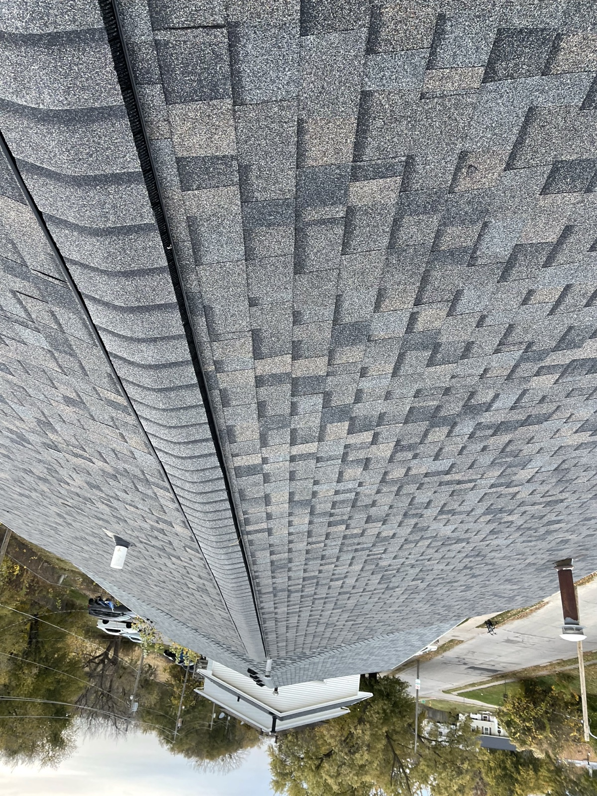

Your Trusted Exterior Contractor in Carlisle, Iowa
Carlisle may be smaller, but its homeowners deserve the same quality of work as any Des Moines suburb. We bring full-service roofing, siding, gutter, and concrete work to Carlisle families, with the same free estimates, honest pricing, and clean job sites we are known for.
We handle your home inside and out: roofing, siding, gutters, concrete, kitchen and bathroom remodeling, basement finishing, and interior painting. Every project comes with a free estimate, honest pricing, and a clean job site. That is the Black Ridge promise, whether you are in Carlisle or anywhere else in Central Iowa.
Carlisle is a small, tight-knit community south of Des Moines along Highway 5, and the people here take pride in their homes. The housing stock ranges from older homes built in the 1960s through the 1990s to some newer development on the edges of town. Those older homes often need a full exterior overhaul, and that is exactly what we do best. When your roof, siding, and gutters all need replacing at the same time, it makes sense to work with one contractor who can handle the entire project. We coordinate the work so everything gets done efficiently, and you end up with a home that looks brand new from the curb.
Inside Carlisle's older homes, bathrooms from the 1970s and 1980s are one of the most common remodel targets we see. Outdated tile, old fixtures, and cramped layouts can all be transformed with a bathroom remodel that brings in modern materials and smarter design. Kitchen remodeling is popular too. swapping out old cabinets and worn countertops for something that fits how families actually cook and gather today. And interior painting goes a long way in these homes, brightening up rooms and giving the whole space a modern, updated feel without a major renovation.
Concrete is another area where Carlisle homeowners need help. The front steps and stoops on older homes often crack over time and can become a real safety hazard, especially in the winter when ice makes uneven surfaces even more dangerous. We tear out the old concrete and pour new steps, sidewalks, driveways, and patios that are built to hold up for decades. Basement finishing is a smart investment in Carlisle too, adding livable square footage to your home without the cost of an addition. Whether you need one project or want to tackle your whole house inside and out, Black Ridge Contracting treats every Carlisle home like it is our own.
- Family-owned, based just minutes away in Ankeny
- Fully licensed and insured in Iowa
- Free, no-pressure estimates
- 24/7 emergency storm damage response


Carlisle's Roofing Contractor. Here's What Homeowners Actually Need to Know.
Carlisle is a small southeast metro city with a population around 4,000 and a more rural feel than the western suburbs. Housing stock is mixed: older ranches and split-levels through the central area and along Highway 5, plus a smaller wave of newer builds in modest subdivisions on the edges of town. Mature tree cover in the older parts of town adds an impact-damage risk from limbs during severe storms.
Central Iowa hail moves through Carlisle regularly. Wind damage from spring and summer storms lifts shingles at ridges and eaves. If a storm rolls through, get an inspection scheduled while the damage is fresh. See our storm damage roof repair process, or schedule a free inspection.
The typical Carlisle roof job runs $8,000 to $14,000 for a standard asphalt shingle replacement. Steeper pitches on older split-levels push higher. Carlisle requires a building permit for roof replacement and requires proper contractor licensing. We pull the permit for you. Read the full roof replacement process.
Sometimes a repair is the right call. Common Carlisle repair jobs include failed vent boots, chimney flashing on older ranches, and missing shingles after wind. See the full list of roof repair jobs we handle.
We work Carlisle jobs regularly out of Ankeny. Family-owned, licensed, insured, and comfortable with rural-feeling projects that require the crew to bring everything with them.
See All Roofing Services in Carlisle →Services We Provide in Carlisle, Iowa
From your roof to your kitchen, Black Ridge handles it all, inside and out, for Carlisle homeowners.

Roofing in Carlisle
New roofs, replacements, storm damage repair, and inspections for Carlisle homeowners.
Learn about roofing →
Siding in Carlisle
Vinyl, fiber cement, and engineered wood siding to protect and beautify your Carlisle home.
Explore siding options →
Gutters in Carlisle
Gutter installation, repair, and guards to protect your Carlisle home's foundation.
See gutter solutions →
Concrete in Carlisle
Driveways, sidewalks, patios, and steps for Carlisle homes. Removal and replacement.
Get a concrete quote →
Kitchen Remodeling in Carlisle
Cabinets, countertops, flooring, and full kitchen renovations for Carlisle homeowners.
Plan your kitchen remodel →
Bathroom Remodeling in Carlisle
Showers, tile, vanities, and complete bathroom redesigns for Carlisle homes.
Start your bathroom remodel →
Basement Finishing in Carlisle
Turn unused space into living space. Framing, drywall, flooring, and full buildouts.
Explore basement options →
Interior Painting in Carlisle
Walls, ceilings, trim, and cabinets. Clean lines and a fresh look for your Carlisle home.
Get a painting estimate →Questions Carlisle Homeowners Ask Us
Yes. Carlisle requires a building permit for roof replacement, and the contractor must have proper Iowa licensing. We pull the permit for you as part of the job.
Most residential roof replacements in Carlisle run $8,000 to $14,000 for a standard asphalt install. Steeper pitches on older split-levels push the number higher. We give you a firm written quote before any work starts.
Central Iowa hail moves through Carlisle regularly. Hail bruising on shingles and wind-lifted shingles at ridges and eaves are the most common findings. Mature tree cover in older parts of town adds an impact-damage risk from limbs during severe storms.
Carlisle has mixed housing stock. Older ranches and split-levels through the central area and along Highway 5 are on second or third roofs. A smaller wave of newer builds on the edges of town are typically still in decent shape.
Roofing (new construction, replacements, storm damage repair, and inspections), siding installation (vinyl, fiber cement, engineered wood), gutter services (installation, repair, guards), concrete work (driveways, sidewalks, patios, steps), and interior remodeling (kitchens, bathrooms, basement finishing, interior painting) throughout Carlisle, IA.
Call us at (515) 219-4654 or fill out our online form. We schedule a free, no-obligation visit to your Carlisle property, inspect the work needed, and provide a clear written quote usually within 24 hours.